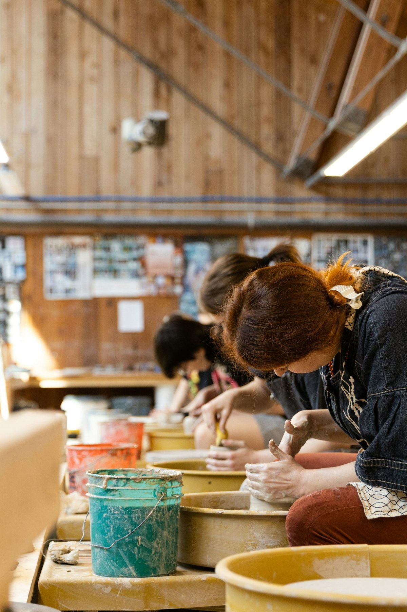

Trial

Trial & Course
一日体験・コース
器も道具も、すべて教室でご用意します。
2時間で金継ぎの基本を体験して、その日にお持ち帰りいただけます。
TOP ／ 一日体験・コース
Trial
Trial & Course
器も道具も、すべて教室でご用意します。
2時間で金継ぎの基本を体験して、その日にお持ち帰りいただけます。
TOP ／ 一日体験・コース
Quick Guide3つのコースの早見表
| 一日体験 | 本漆 金継ぎ教室 | 金継ぎアクセサリー | |
|---|---|---|---|
| こんな方に | まずは気軽に試したい方 | 自分の大切な器を直したい方 | 器がなくても楽しみたい方 |
| 時間 | 2時間（1回） | 1回2時間 × 全10回 | 1.5時間（1回） |
| 料金 | 6,600円 | 総額 49,500円（1回 4,400円） | 4,950円 |
| 器 | 教室で用意（器代込み） | ご自分の器（1〜3点） | 陶片を教室で用意 |
※ 体験当日にご入会いただくと、本漆 金継ぎ教室の入会金 5,500円が半額（2,750円）になります。
はじめての方へ
Trial一日体験

器・道具・エプロン・手袋はすべて教室でご用意します。汚れてもよい服で来るだけで大丈夫です。

1クラス最大6名。先生がひとりひとりの手元を見ながら、筆の持ち方からお教えします。

仕上がった器は、箱に入れてその日にお渡しします。おうちに飾って楽しめます。
一日体験では、教室で用意した器を使います。お手持ちの器は「本漆 金継ぎ教室」で、食器として使えるように直せます。くわしくは「本漆 金継ぎ教室」のページへ →
Schedule当日の流れ
0:00
エプロンと手袋をつけて、席へ。荷物は荷物置き場へどうぞ。
0:10
金継ぎの歴史と「景色」の考え方を、実物の器を見ながら10分ほどご紹介します。
0:20
欠けのある豆皿・小皿の中から、好きな1枚を選びます。仕上げは金・銀から選べます。
0:30
エポキシ樹脂のパテで欠けを埋め、形を整えます。先生がとなりで手元を見ます。
1:10
継ぎ目に細く塗り、金色の粉をのせて仕上げます。いちばん集中する時間です。
1:45
乾くまでの間、お茶を飲みながら、ほかの方の作品も見てみましょう。
2:00
仕上がった器を箱に入れてお渡しします。おつかれさまでした。

Flow予約から当日まで
はじめての方も迷わないように、当日までの流れをご案内します。
STEP 01
希望の日時と人数をお伝えください。受付は10:00 – 18:00（水・木・土・日）です。
STEP 02
持ち物はありません。汚れてもよい長袖の服でお越しください。
STEP 03
開始の10分前までにお越しください。中崎町駅から徒歩3分です。
STEP 04
約2時間で完成。気に入ったら、その場で本漆コースの入会相談もできます。
Detail料金・詳細
一日体験では、2時間で仕上げるために乾きの早い合成うるしを使います。仕上がった器は、食器ではなく飾ってお楽しみください。ご自分の器を食器として直したい方には、天然の漆だけを使う「本漆 金継ぎ教室」をおすすめしています。
Next体験のあとは
体験当日にご入会いただくと、本漆 金継ぎ教室の入会金 5,500円が半額（2,750円）になります。

自分の器を、天然の漆で直す本格コース。全10回・約3か月。
本漆 金継ぎ教室を見る→
陶片を金で縁取って、ピアスやブローチに。1.5時間。
金継ぎアクセサリーを見る→Price料金
表示はすべて税込・材料費込みです。
Reservationご予約
まずは2時間の一日体験から。器も道具も教室でご用意するので、手ぶらでお越しください。
ご予約・お問い合わせはお電話のみで承っております
090-2323-4771受付時間 10:00 – 18:00（水・木・土・日）／ 開講日以外は留守番電話で折り返します
Accessアクセス
〒530-0016 大阪府大阪市北区中崎 0-0-0 2F
地下鉄谷町線「中崎町駅」2番出口より徒歩3分
阪急「大阪梅田駅」茶屋町口より徒歩10分
開講日 水・木・土・日 10:30 – 20:30
TEL 090-2323-4771（ご予約はお電話のみ）